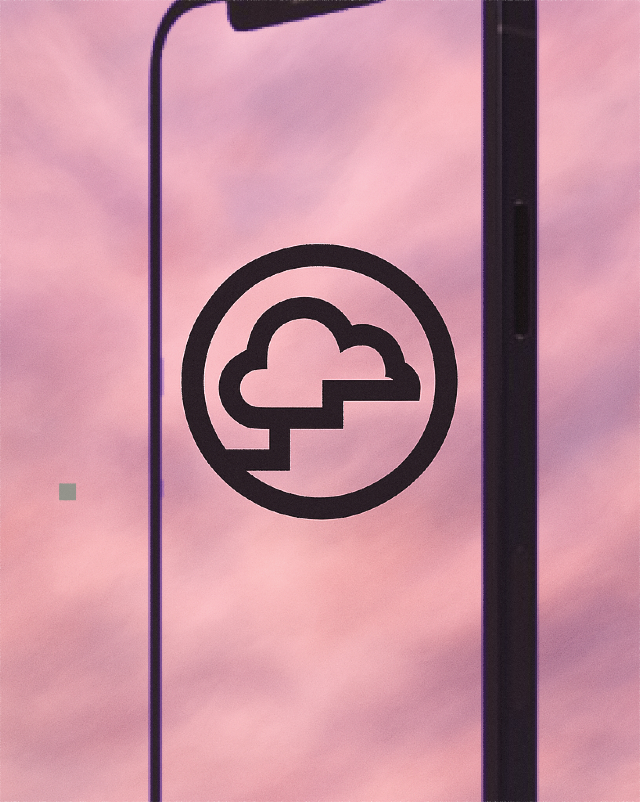

How do you grow a savings app without paying for it?
Dreams wanted to expand their reach - not through ads, but by turning existing users into advocates. My team was brought in to find out how. I led the planning and facilitation of a four-day design sprint.
DESIGN SPRINT: DAY 1
● Expert Insights
We started by getting everyone on the same page. Through expert interviews with key people at Dreams, we mapped pain points, opportunities, and open questions — then reframed them as "Can we…?" prompts to focus the sprint. By end of day, we had a shared long-term goal and a set of sprint questions to guide everything that followed.

● Sketching Ideas
The afternoon moved into idea generation. I facilitated a series of sketching exercises - note-taking, Crazy 8s, rapid ideation. For several participants, this was a new way of working, so part of my role was creating enough psychological safety to keep the pace without losing the room. Each team member left with one developed concept.

DESIGN SPRINT: DAY 2
● Concept Evaluation
Concepts were anonymized and pinned up for silent critique. Dot-voting surfaced two clear directions: one built around monetary rewards, one around playful gamification. Running two concepts in parallel added complexity, but gave us something more useful - a genuine comparison to take into testing.

● Storyboarding & User Flows
With the two concepts selected, we moved into collaborative storyboarding - mapping each into a detailed user flow that the design team could prototype directly from. The dual-track approach demanded precision here; loose storyboards would have cost us time we didn't have on day three.

DESIGN SPRINT: DAY 3
● Prototyping
The design team built out both prototypes in Figma, working closely from the storyboards. Rapid UI decisions were inevitable at this pace — Dreams' existing design system kept things consistent and cut down decision fatigue considerably. Simultaneously, we reached out to recruit participants for the following day's testing.

DESIGN SPRINT: DAY 4
● Testing
Both prototypes were tested remotely, with participants sharing their screens while moving through the flows. What came back was specific, useful, and occasionally surprising - exactly what a sprint is for.


USER INSIGHTS
The monetary prototype came out on top - users found it clear and more motivating. The value exchange felt transparent, which mattered.
The gamification prototype generated curiosity, especially through its "unlock to reveal" mechanic. But it lacked urgency, and that gap showed up in both completion rates and willingness to refer. Interestingly, the reveal mechanic showed real potential as a way to surface educational content - savings tips, financial literacy, rather than as a referral hook.
A few other things stood out clearly:
● Referrals worked better when users could see what their friends were saving for. A trip, a purchase, something concrete - social proof through shared goals felt more compelling than a generic invite.
● People preferred dropping a link into an existing group chat over sending a pre-written message. It felt more natural, less like a marketing campaign.
● Custom messages outperformed templated ones. Users wanted to sound like themselves.
● Seeing funds arrive in real time was a strong motivator for continued engagement and sharing.
● In-app notifications were trusted more than push — worth noting for anything referral-related downstream.

OUTCOME
● Dreams launched the referral program in the Norwegian market.
● Our team was invited back to present the sprint methodology and findings to the full company.
● The facilitation exercises we introduced made their way into how the team works.